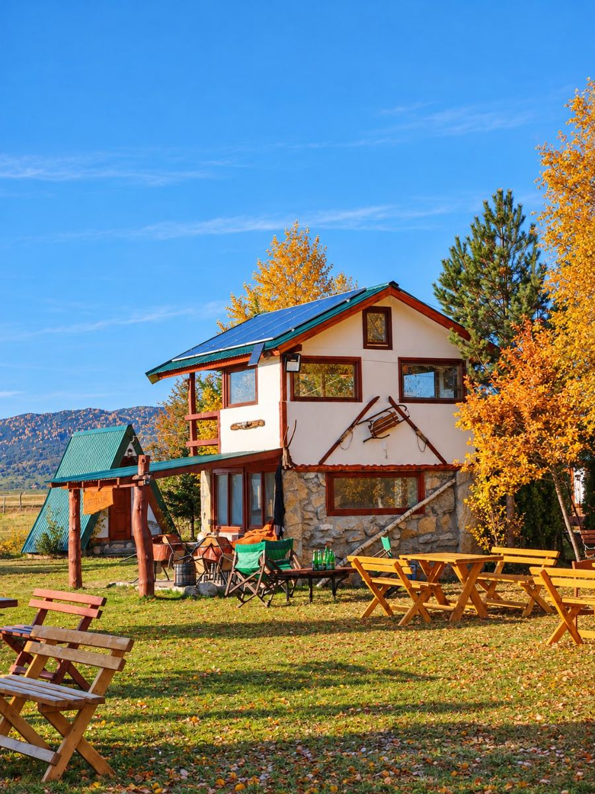
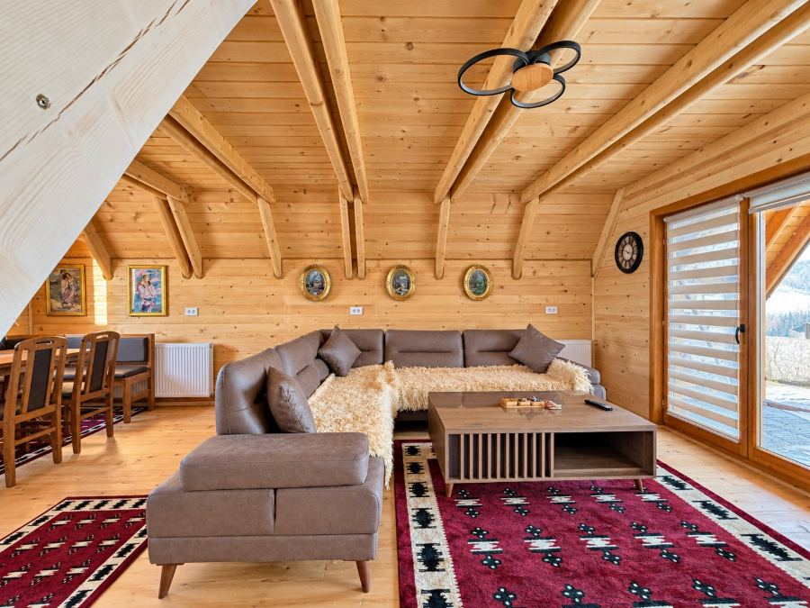

Drvene kućice u Karajukića Bunarima. Za parove, porodice i društvo koje traži tišinu.

Halilović - Pešterske zore su drvene kućice u Karajukića Bunarima, na Pešterskoj visoravni kod Sjenice.
Zidovi i plafoni su od drveta. Kada uđete, odmah osetite miris i toplinu.
Jutro počinje kafom ispred vrata. Veče se završava kod ognjišta.
Sve što piše ovde odnosi se na naše kućice. Ako vas zanima nešto što ne vidite, pitajte nas.

Spavaći prostor sa krevetima, dnevni boravak, kuhinja, trpezarija i kupatilo.
Dođite sa decom ili sa društvom. Recite nam koliko vas je, pa ćemo naći raspored koji vam odgovara.
Uveče vatra, razgovor i zvezde. Na Pešteri nema gradskog svetla.
Imate svoj prostor i svoj ritam. Niko vas ne žuri.
Kućice gledaju na otvorene pejzaže Peštera.
Dolazite kolima, a parking za goste je besplatan.
Kućice spolja i iznutra, leti i zimi. Sve fotografije su snimljene kod nas. Kliknite na sliku da je uvećate.
Više na InstagramuPešter je kraška visoravan između Sjenice i Tutina, na oko 1.150 metara nadmorske visine. Vazduh je svež i usred leta, a noći su tihe.
Peštersko polje je specijalni rezervat prirode, a kod sela je jezero gde se odmaraju ptice selice. Šetajte poljem ili ostanite ceo dan ispred kućice.
Naše kućice su na turističkom području kampa Peštersko polje. Fotografije ispod prikazuju kamp, a ne smeštaj Halilović - Pešterske zore. Za sadržaje kampa pitajte nas pre dolaska.
Opština Sjenica, Srbija
Pešterska visoravan, 1.128 m nadmorske visine
Selo je južno od Sjenice, na ivici Pešterskog polja. Pre polaska nam se javite i poslaćemo vam tačnu lokaciju na WhatsApp.
Tražite tačnu lokacijuNapomena za postavljanje: mapa sada pokazuje centar sela Karajukića Bunari. Tačnu poziciju objekta potvrditi pre objave sajta.
Ne vidite odgovor koji vam treba? Pišite nam, odgovaramo na WhatsApp-u i Viberu.
Postavite pitanjePošaljite poruku na WhatsApp ili Viber, ili pozovite +381 62 836 1689. Napišite datume dolaska i odlaska i koliko vas dolazi. Odgovaramo sa slobodnim terminima i cenom.
Cena zavisi od termina, broja osoba i dužine boravka. Pišite nam datume i dobićete tačnu cenu.
Recite nam koliko vas je, sa decom ili bez. Predložićemo raspored koji vam odgovara.
Spavaći prostor sa krevetima, dnevni boravak, kuhinja, trpezarija i kupatilo. Zidovi i plafoni su obloženi drvetom.
Ima. Parking za goste je besplatan.
Selo je u opštini Sjenica, južno od grada, na ivici Pešterskog polja. Pre polaska nam se javite i poslaćemo vam tačnu lokaciju na WhatsApp.
Selo je na 1.128 metara nadmorske visine. Leta su sveža, a zime su među najhladnijima u Srbiji. U januaru 2006. ovde je izmereno -39 °C, najniža temperatura u Srbiji. Ponesite toplu odeću i leti, za večeri. Ako dolazite zimi, pitajte nas za stanje puta.
Kućice su na turističkom području kampa Peštersko polje, koji su pokrenule porodice Hukić i Halilović. Sve na ovoj stranici odnosi se na smeštaj Halilović - Pešterske zore. Za sadržaje kampa pitajte nas.
Peštersko polje je specijalni rezervat prirode i močvarno područje od međunarodnog značaja. Kod sela je jezero gde se zaustavljaju ptice selice. Ostatak vremena možete provesti u šetnji poljem ili ispred kućice.
Pošaljite nam datume i koliko vas dolazi.
Javljamo vam slobodne termine i cenu.
Potvrdite termin, a mi vam šaljemo tačnu lokaciju.